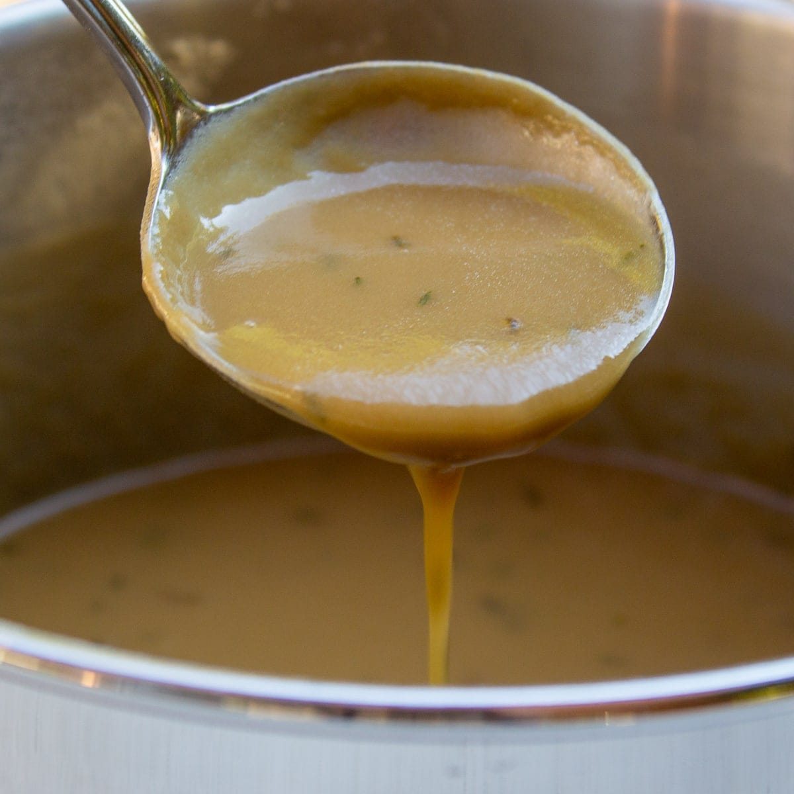

Vegetarian Gravy

Description
This flavorful gravy is made without any animal products! Gluten-free flour can even be used if desired.
Ingredients
- ¼ C Vegetable Oil
- ¼ C Flour
- ½ tsp Rosemary
- ½ tsp Thyme
- ½ tsp Marjoram
- ½ tsp Basil
- 2 C Vegetable Broth
- Soy Sauce (To Taste)
Steps
- Heat oil in saucepan. Add flour and cook over low heat.
- After a few minutes add rosemary, thyme, marjoram, and basil. Cook a few minutes longer.
- Add vegetable broth, a little at a time, until it reaches the desired consistency.
- Season with soy sauce to taste.